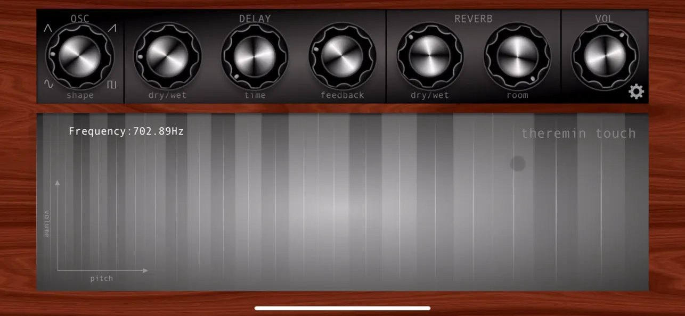
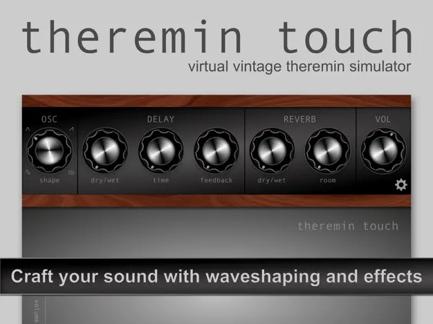
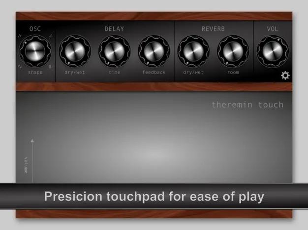
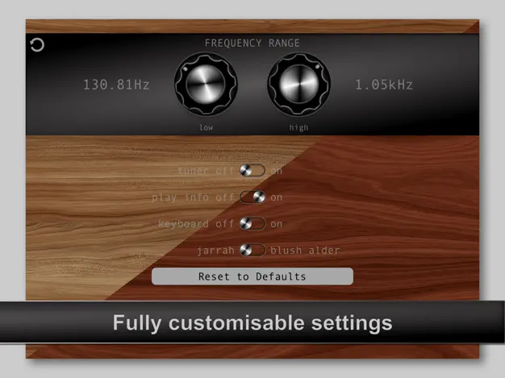

A vintage styled theremin for iPhone and iPad.
Single oscillator, monophonic, with the instability that makes a real theremin a real theremin. Slide your finger across the touch pad to control pitch and volume, or use Apple Pencil on iPad.
Download on the App Store
Features
- Touch pad controls frequency (left to right) and volume (bottom to top)
- 4 oscillator wave shapes
- Onboard delay and reverb
- Adjustable low and high frequency limits for a more playable instrument
- 1 to 7 octave range (approx.), C1 (32.703 Hz) to C8 (4.186 kHz)
- Built-in tuner and pitch readout
- Works with Apple Pencil on iPad
- Customisable look
- Portrait and landscape
- Built with AudioKit
Screens



FAQ
I get no sound.
Check the physical mute switch and the device volume first; the app plays through the standard media output, so a muted or silenced device produces nothing. Version 2.6 added a volume control on the main screen and fixed the most common cause of this report. If you are on an older version, update from the App Store.
How does volume work?
Volume follows your finger vertically on the touch pad: lower on the pad is quieter, higher is louder. Pitch follows the horizontal position. There is a short demo here: Theremin Touch volume demo.
The pitch range is too wide to play accurately.
Open Settings and narrow the lowest and highest frequency limits. The pad then maps to a smaller range, which makes it far easier to hit notes. The two limits are kept at least one octave apart.
Can I reset everything?
Yes. Settings has a "Reset to Defaults" button which restores all knobs, limits and appearance options to their original values.
Does it support Apple Pencil?
On iPad, yes. The touch pad responds to Pencil as well as finger input.
Is there an AUv3 or MIDI version?
No. Theremin Touch is a standalone app. It has no MIDI input or output and does not load as a plug-in in other apps.
Does it run on Mac?
The App Store lists it as available on Apple silicon Macs via iPad app compatibility, but it is designed and tested for iPhone and iPad only. It is not verified for macOS.
What does the app collect about me?
Nothing. See the privacy policy.
Contact
Found a bug or have a question the FAQ doesn't cover? Fill this in and tap Send. It opens your mail app with the message pre-filled; nothing is sent until you press send there.